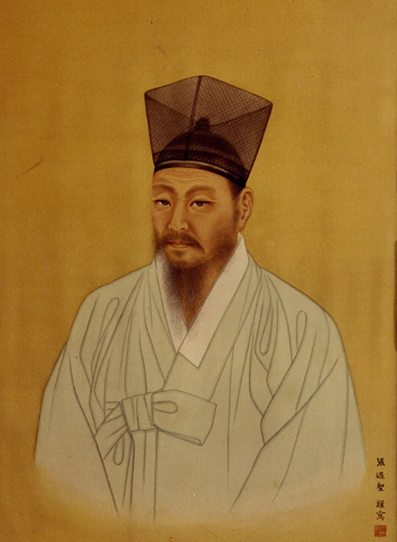

다산 정약용
"경세치용, 이용후생, 실사구시를 집대성한 조선 실학의 거인"

- 본관 / 호: 나주(羅州) / 다산(茶山), 여유당(與猶堂), 사암(俟菴)
- 가문적 자부심: 대대로 문과 급제자를 배출한 '8대 옥당(홍문관) 집안'이자, 외가인 해남 윤씨(윤선도, 윤두서)의 예술적 가풍을 이어받음.
- 소개: 유교 경전의 독자적 재해석(수신)을 바탕으로, 국가 제도를 전면 개혁하고 민생을 구제하려는 경세치용(치인)의 학문 지향.
- 생몰 연도: 1762년 ~ 1836년
1. 시기별 생애 및 관직 여정
- 성호 학풍 계승: 이승훈, 이벽, 이가환 등과의 교유를 통해 성호 이익의 실학 사상을 접함.
- 정조와의 운명적 만남: 1783년 소과 합격 후 성균관에 입학하여 정조의 총애를 받기 시작함.
- 천주교 입문: 1784년 이벽을 통해 천주교 교리를 접하고 깊은 정신적 충격을 받음. 이는 훗날 그의 관직 생활과 유배길에 결정적인 영향을 미침.
- 내직 활동: 규장각 초계문신으로 발탁되어 박제가, 이덕무 등 북학파와 교유함. 사도세자의 묘를 수원으로 옮길 때 '배다리(舟橋)'를 설계함. 31세에는 서양 과학 기술을 응용해 수원 화성을 설계하는 탁월한 엔지니어링 능력을 발휘함.
- 외직과 민생 대면: 천주교 연루 혐의로 금정역 찰방, 황해도 곡산부사 등으로 좌천·파견되었으나, 이를 민생을 구제하는 기회로 삼음. 이 시기 천연두 치료서인 『마과회통(麻科會通)』을 저술함.
- 정조의 승하: 1800년 형조참의 재직 중 천주교 문제로 또다시 공격을 받아 사직하고 낙향함. 곧이어 든든한 버팀목이었던 정조가 승하하면서 관직 생활이 종결됨.
- 고난의 유배: 1801년 신유박해와 황사영 백서 사건에 연루되어 전라도 강진으로 유배됨.
- 학문의 전화위복: 참담한 유배 기간을 학문 연마의 계기로 삼아, 둘째 형 정약전과 서신을 교환하며 학문적으로 소통함. 이 시기 육경사서에 대한 경학 연구와 국가 개혁안을 담은 500여 권의 대저술을 남김.
- 1818년 유배에서 해배된 후, 고향인 마재(남양주) 여유당에서 저술을 수정·보완함.
- 회갑(62세) 때 자신의 삶을 엄격히 성찰한 '자찬묘지명(自撰墓誌銘)'을 광중본과 집중본 두 종류로 작성함. 1836년 향년 75세로 세상을 떠남.
[10~20대] 학문적 수련과 천주교와의 조우
[30대] 정조의 브레인으로 활약 (12년간의 관직)
[40~50대] 18년간의 강진 유배기 (다산학의 완성)
[60대 이후] 만년의 삶과 성찰
2. 학문의 첫 번째 기둥: 경학(經學) 체계
"육경사서(六經四書)로써 자신을 닦다 (修己)"
- 초기 경학 연구: 성균관 시절 정조의 질문에 답한 『중용강의』와 『시경강의』를 지었으며, 당시 주자의 성리학적 해석을 탈피해 왕의 극찬을 받음.
- 유배기 경학 집대성: * 육경(六經) 연구: 『시경강의』, 『매씨서평』, 『상례사전』, 『악서고존』, 『주역사전』, 『춘추고징』
- 사서(四書) 연구: 『논어고금주』, 『맹자요의』, 『중용강의보』, 『대학강의』
- 수양론의 실천: 경전 연구 후 『소학지언』과 『심경밀험』을 주석하여 마음과 행동을 다스리는 선비의 자세를 정립함.
- 자평(自評): 정약용 스스로 자신의 모든 저술 중 정밀한 고증이 담긴 『상례사전』과 『주역사전』을 가장 중요하고 가치 있는 저서로 꼽음.
3. 학문의 두 번째 기둥: 실천적 경세론 (일표이서)
"일표이서(一表二書)로써 천하와 국가를 다스리다 (治人)"
- 핵심: "낡은 조선을 새롭게 바꾸겠다."
- 토지 개혁: 권세가들의 토지 겸병과 지주제의 폐해를 비판하며, 공전과 사전의 경작을 분리해 농민의 수탈을 막고 국가 재정을 확보하려는 개혁안을 제시함.
- 상공업 및 기술 발전: 중국의 선진 기술을 도입하고 북학을 전담할 국가 기구인 '이용감(利用監)' 설치를 주장함. 사농공상(士農工商)의 신분적 귀천을 극복하고 직업적 분업을 보장하려 함.
- 핵심: "군자의 학문은 수신이 그 반이요, 나머지 반은 목민(牧民)이다."
- 내용: 지방관(목민관)이 지켜야 할 도리와 부패 방지, 백성을 사랑하는 애민(愛民) 정신을 바탕으로 피폐한 향촌 사회의 실상을 바로잡는 구체적인 행정 지침을 제시함.
- 핵심: 인간 존중과 법 집행의 공정성 확보
- 내용: 억울한 죄수가 없도록 살인 사건 등 강력 범죄의 수사, 형벌 적용, 판결 과정의 오류를 바로잡기 위한 실무 사법 지침서
경세유표 (經世遺表, 1517) : 중앙 제도 개혁안
목민심서 (牧民심서, 1818) : 지방 행정 개혁안
흠흠신서 (欽欽新書, 1819) : 형사 및 사법 제도 개혁안